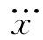

现在我们愿意来讨论也许可以将麦克斯韦的电动力学理论做某种改进，以便使得电子作为一个简单点电荷的那种概念能够维持得住。为此曾做过许多种尝试，而其中有些理论甚至能将事情安排得使电子质量全都是电磁性质的。但所有这些理论如今却都已消声匿迹了。要来讨论曾被提出来的某些可能性——借以看看人类智力中的一些奋斗历程——仍是有意义的。
我们是通过谈论一个电荷与另一个电荷之间的相互作用而着手进行我们的电学理论的。然后又对这些相互作用的电荷建立一种理论并最后得出场论。我们对此竟如此相信，以致承认它所告诉的有关电子中的一部分对另一部分的作用力。也许整个困难就在于电子根本不会对其本身进行作用，也许从分开电子的相互作用过渡到一个电子与其本身的作用，这概念外推得太远了。因此在有些提出的理论中，电子作用于自身的可能性给排除掉了。于是，就不再存在由于自作用而引起的那种无限大。并且，也不再有任何与粒子联系着的电磁质量。所有质量都回到机械性质上面，但在这种理论中仍有一些新的困难。
我们必须立即说明，这样的理论要求对电磁场概念加以修改。你会记得，我们开始时就讲，作用于任何位置的粒子上的力仅由两个量E和B来确定。如果我们放弃了“自作用力”，则这一说法可能不再正确，因为假定某处有一电子，它所受的力并非由总E和总B给出，而只是由别的 电荷所产生的那些部分E和B给出。因此当计算一个电荷受力作用的情况时，我们总得记住，E和B中有多少来自那个电荷，而又有多少来自其他电荷。这使得理论烦琐得多，但却消除了那个无限大的困难。
因此，如果我们乐意 ，便可以说不存在诸如电子作用于其本身这种事情，因而抛弃了式（28.9）中全部的力。然而这么一来，我们却把小孩连同洗澡盆里的水一起倒掉了！因为式（28.9）中的第二项，即含 的项，仍然是需要的。这个力处理某种事情十分确切。如果你把它丢掉，你又将陷入困难之中。当我们加速电荷时，它会辐射出电磁波，从而损耗了能量。因此，加速电荷，比加速相等质量的中性物体，必然需要更大的力，否则能量不会守恒。我们对加速粒子所做的功率必须等于每秒内由于辐射而损耗的能量。以前就曾谈论过这种效应——它被称为辐射阻尼。不过我们仍需回答这样一个问题：必须用做功来抵抗的那个附加力究竟来自何方？当一巨大天线正在辐射时，力来自天线中的一部分电流对另一部分电流的影响。对于正在向真空空间辐射的单个的加速电子来说，力似乎只能从一个地方来——即从电子的一部分对另一部分的作用而来。
我们回到第1卷第32章中后发现一个振动电荷辐射能量的功率为：
（28.10）
让我们看看为抵抗式（28.9）的自身力而对 电子所做 的功率来说，能够得到些什么。功率等于力乘速度，或Fẋ：
第一项与dẋ2 /dt成正比，因而恰好对应于与电磁质量联系在一起的动能 的变化率。第二项可能对应于式（28.10）中的辐射功率，可是它仍有所不同。差异来源于这样的事实，即式（28.11）中的那一项是普遍正确的，而式（28.10）却只对振动 电荷才正确。我们能够证明：如果电荷运动是周期性的，则这两者等同。为此，将式（28.11）中的第二项重新写成
那不过是一种代数变换。如果电子运动是周期性的，则 这个量会周期性地回到相同的值，因此若对它的时间微商取平均 便会得到零。然而，第二项却总是正的（它是一个平方），因而它的平均值也是正的。这一项给出了所做的净功，并恰好等于式（28.10）。
为了使在辐射系统中的能量守恒，那个由 所表示的自身的力项是必需的，因而不能把它丢掉。事实上，洛伦兹所取得的成功之一就是在于证明存在这种力并且它来自电子对其本身的作用。我们必须相信电子对其本身作用的概念，并需要 含 的项。问题在于如何才能获得该项，而又不至于同时得到式（28.9）中的第一项，那是一切困难之源。我们不懂得应该怎么办才好。你看，经典电子理论已经把它自身推进了困境。
为了解决事情已有了修改定律的若干种其他尝试。由玻恩和因费尔德建议的一种办法，是用一种复杂的方式来改变麦克斯韦方程组，使其不再是线性的。这样，电磁能量和动量就可以表现出有限大，但他们所倡议的这些规律还预言了一些从未被观测到的现象。他们的理论也遭遇到另一种我们将在下面谈到的、为避免上述毛病所做的一切尝试所产生的共同的困难。
下述独特的可能性是由狄拉克提出的。他说：让我们认为电子通过式（28.9）中的第二 项而不是第一项对本身作用。然后他又有一种能消除其中一项而不消除另一项的精巧计划。他说，看！当只取麦克斯韦方程组的推迟 波解时我们做过一种特殊的假设，要是代之以取那些超前 波，就会得到一些别的东西。关于自作用力的公式应是
除了级数中的第二项和某些更高次项的符号外，这个式子几乎与式（28.9）一样［从推迟波变成超前波不过改变了推迟的符号 ，而不难看出，这相当于处处都改变t的符号。对于式（28.9）的唯一效果就是改变所有奇数次的时间微商的符号］。所以，狄拉克说，让我们建立一个新的法则，即电子是通过它所产生的推迟与超前两种场的差值 之一半而作用于其本身的。这样，式（28.9）与（28.11）之差除以2，便是
在所有更高次的项中，半径a仿佛是分子中的某个正次幂。因此，当我们趋向点电荷的极限时，就只会得到那么一项——恰恰是所需要的。就这样，狄拉克得到了辐射阻力而不是惯性力。电磁质量不见了，而经典理论也得救了——可是却付出了关于自作用力的任意假定的那种代价。
狄拉克的附加假设的任意性至少部分地被惠勒和费恩曼所排除，他们提出了一个更加奇怪的理论。他们建议点电荷仅与其他的电荷相互作用，但这种相互作用一半是通过超前波而另一半是通过推迟波产生的。最令人惊奇的是，在大多数场合下你将不会看到超前波的任何效应，但它们却的确具有刚好产生辐射作用力的效应。该辐射阻尼并不是 由于电子对本身的作用，而是由于下述的特殊效应。当一电子在时刻t被加速时，它将在较后 时刻t′=t+r/c（其中r为至其他电荷的距离）摇动世界上所有其他电荷，这是由于推迟 波的作用。但此时别的电荷又通过它们的超前 波从后面作用于原来那个电子上，这些波将在等于t′减去 r/c的t″时刻、当然也就恰恰在t时刻上到达（它们也用其推迟波从后面作用，但那不过是对应于正常的“反射”波罢了）。超前波与推迟波的组合意味着，当一个振动电荷正在被加速时它会感觉到来自所有“将要吸收”其辐射波的那些电荷的力。你看在试图获得关于电子的理论时人们已陷入多么严重的困难之中！
现在要来描述另一种理论，以表明当人们碰到麻烦时会想些什么。这是由博普提出的对电动力学定律的另一种修改。你会认识到，一旦你决定要来修改电动力学方程组时，你可以在任一个想要下手的地方开始。可以改变关于电子的力的定律，或者改变麦克斯韦方程组（正如我们在已描述过的例子中所见到的），或者也可在其他某个地方做出改变。一种可能性是去改变那些用电荷和电流给出的势的公式。我们的这些公式之一已经表明在某一点的势是由较早时刻在任何其他点上的电流（或电荷）密度所给出的。应用有关势的四维矢量符号表示法，可写成
博普的美妙而又简单的想法是：也许困难出在这个积分里的因子1/r上。假设我们从此开始，即只是通过假定在某点上的势取决于在任何其他点上的电荷密度作为该两点间距离的某个 函数，比如说f（r12 ）吧。于是，在点（1）处的总势就将由jμ 乘以这一函数而对全部空间的积分所给出：
Aμ （1，t）=∫jμ （2，t-r12 /c）f（r12 ）dV2 .
这就是一切。既没有微分方程，也没有其他的东西。噢，还有一件事情。我们也要求这结果应该是相对论性不变的。因此所谓“距离”，我们应取在时空中两点间的不变“距离”。这一距离的平方（在一个无关紧要的符号变化范围之内）为
因此，对于一个相对论性不变的理论来说，我们就应当采取s12 的大小的某一函数，或与此相同的，即采取 的某一函数。因此博普理论就是
（当然，这积分就应该是对整个四维体积dt2 dx2 dy2 dz2 进行）。
图28-4 用于博普的非局域理论中的函数F（s2 ）
剩下的一切就是要选取一个适当函数作为F。对于F来说，我们仅仅假定这么一点——即除了自变数接近于零处都十分微小——使得F的曲线像图28-4所示的那样。它是一个狭窄钉形，具有一个集中于s2 =0处的有限面积，我们可以说它的宽度约等于a2 。不妨粗略地这样说，当我们计算点（1）的势时，只有当 是在零点的±a2 之内时那些点（2）才能产生一些可观的效应。我们可以指出，这点只有对于

这种情况F才是重要的。你如果乐意，还可以使它更为数学化些，但那是我们的想法。
现在假定a比起像电动机、发电机等普通器物的大小来要小得多，以致在正常问题中总是r12 ≫a。这样式（28.16）表明，只有在t1 -t2 处于下列的小范围内那些电荷才会对式（28.15）的积分有所贡献：
这有什么含义呢？这一结果表明，在Aμ 的积分中只有与我们要计算的势所处的时刻t1 相差为推迟时间r12 /c——带有一个只要符合r12 ≫a便可以忽略的改正项——的那些时刻 t2 才是重要的。换句话说，博普的这个理论在它给出推迟波的效应这一意义上来说是接近麦克斯韦理论的——只要我们远离任何特定的电荷就行。
事实上，我们能够约略地看出式（28.15）的积分将给出什么结果。如果首先对于t2
从-∞至+∞进行积分——保持r12
固定不变——那么 也将从-∞进至+∞。该积分将全部来自以t1
-r12
/c为中心、而在狭小宽度Δt2
=2a2
/（2r12
c）内的那些t2
的贡献。设函数F（s2
）在s2
=0处具有值K，则对于t2
的积分近似为Kjμ
Δt2
，或
也将从-∞进至+∞。该积分将全部来自以t1
-r12
/c为中心、而在狭小宽度Δt2
=2a2
/（2r12
c）内的那些t2
的贡献。设函数F（s2
）在s2
=0处具有值K，则对于t2
的积分近似为Kjμ
Δt2
，或
当然，还应该取t2 =t1 -r12 /c时的jμ 值，因而式（28.15）就变成
如果我们挑选K=1/4π∈0 ca2 ，则正确地回到了麦克斯韦方程组的推迟势解——自动地包含了1/r的依存关系！而这全都来自一个简单的主张，即在时空中某一点的势取决于在时空中所有其他各点的电流密度，不过带有两点间四维距离的某个狭窄函数的权重因子。这一理论再次预言电子的电磁质量为有限大，而能量与质量之间也具有正确的相对论关系。它们必然如此，因为这理论从一开始就是相对论不变的，而一切似乎都是正确的。
然而这一理论，以及我们所曾描述过的所有其他各种理论，都存在一个基本缺点。我们知道的一切粒子都遵循量子力学规律，因而对电动力学的量子力学修正是必须做的。光的行为像光子。它并非百分之百地像麦克斯韦理论所描述的那样。因此，电动力学理论就必须改变。我们已经提出过，为了修正经典理论而如此艰苦地工作也许是白费时间，因为结果可能是：在量子电动力学中那些困难将消失或可以按照其他某种方式得到解决。可是，这些困难在量子电动力学中却也未被消除。人们之所以花那么多精力试图解决这些经典困难，原因之一就是希望假如他们能够 先解决这些经典困难，然后 才去做量子力学方面的修正，则一切都可能被搞清楚。但在做了量子力学的修正之后麦克斯韦方程组仍然存在困难。
量子效应确会造成某种变化——有关质量的公式被修改了，而普朗克常量出现了——但答案仍然出现无限大，除非你想办法截止积分——正如我们过去在r=a处不得不终止经典积分那样。而答案就取决于你怎样去截断那些积分。可惜我们在这里不能向你们证明这些困难实际上是基本相同的，因为我们对于量子力学理论迄今掌握得那么少，而对于量子电动力学甚至更少。所以你就必须仅仅相信我们的话，即麦克斯韦电动力学的量子化理论对于一个点电子来说会给出无限大的质量。
然而，事实证明，迄今从未有人在从任何一 个已经修改过的理论造成一种自洽 的量子理论方面取得过成功。玻恩和因费尔德的想法从没有满意地转变成量子理论。狄拉克的或惠勒和费恩曼的关于超前和推迟波的那些理论也从未被转变成满意的量子理论。博普的理论同样也未曾被转变成令人满意的量子理论。所以今天，对这一问题还没有已知的解答。我们还不懂得如何去形成对电子或对任一个点电荷不会产生出无限大自能的一种协调一致的理论——包括量子力学。而在同时，也没有描述一个非点电荷的令人满意的理论。这是一个还未得到解决的问题。
当你决定仓促地去做出一个理论、其中电子对其本身的作用完全被消除、以致电磁质量不再具有任何意义、然后建造量子理论时，那你就应该被警告说，你一定会陷于困难之中。有明确的实验证据表明，电磁惯性是存在的——有证据表明，带电粒子的某些质量的确起源于电磁性质。
在较古老的书本中往往会说，由于大自然显然不会向我们提供两个粒子——一个是中性的而另一个是带电的，其他方面则全都相同——我们就将永远不能够说出有多少质量是属于电磁的而有多少质量是属于机械的。但结果弄清楚，大自然已经 足够仁慈来供给我们恰恰就是这样的物体，以致通过比较带电粒子的观测质量与中性粒子的观测质量，就能够道出是否有电磁质量。例如，在自然界中存在中子和质子，它们之间具有巨大的相互作用力——核力——其来源还不清楚。然而，正如我们已经描述过的，核力具有一种引人注目的性质。就核力方面来说，中子与质子完全相同。就我们所能说的，中子与中子、中子与质子、质子与质子间的核力 全都相同，只有那小小的电磁力才是不同的。从电方面说，质子与中子间的差别有如白天和黑夜，这恰好就是我们所需要的。我们拥有两种粒子，从强相互作用的观点看是全同的，但从电方面看则是不同的。而它们在质量上存在一个小差别。质子与中子间的质量差别——用兆电子伏的单位来表示静能mc2 之差——约为1.3MеV，约等于电子质量的2.6倍。于是经典理论会预言它们具有一个约等于经典电子半径的1/3至1/2、或约为10-13 cm的半径。当然，人们实际上应该应用量子理论，但依靠某种奇怪的偶然性，所有的常数——2π和ћ等等——一起使得量子理论给出与经典理论近似相同的半径。唯一的毛病是符号 错了！中子比质子还要重 。
表28-1 粒子质量
* Δm=（带电粒子的质量）-（中性粒子的质量）。
大自然还提供几种别的粒子对——或三重态——除了它们的电荷之外其他各方面的表现都完全相同。它们通过所谓核力的“强”相互作用与质子和中子发生相互作用。在这种相互作用中，给定种类的粒子——比如说π介子——除了 它们的电荷之外在每一方面的行为都像一个物体。表28-1上给出这些粒子的一张清单，包括对它们测定的质量。那些带电的π介子——无论正的或负的——都具有139.6MеV的质量，但中性π介子较轻为4.6 MеV。我们相信，这一质量差是电磁性质的，它可能相当于一个半径为3至4×10-14 cm的粒子。你将从表上看到其他粒子的质量差往往一般大小相同。
现在这些粒子的大小是可以由其他方法、诸如由在高能碰撞中所表现出来的直径来测定的。因此，这电磁质量似乎一般都与电磁理论相符，只要在场能的计算中在用其他方法得到的相同半径处截止积分。这就是我们为什么要相信这些差值确实代表了电磁质量的原因。
你无疑会对表中那些质量差的不同符号感到担心。弄清楚为什么带电粒子比中性粒子较重挺容易，但像质子和中子那样的粒子，测量出来的质量差倒表现出相反的符号，那又是怎么一回事呢？噢，结果是，这些粒子较为复杂，因而对于它们电磁质量的计算就一定要更精细些。例如，尽管中子没有净 电荷，但在其内部确 有一种电荷分布——只是其净 电荷等于零。事实上，我们相信中子至少有时看来像一个被负π介子“云”所包围着的质子，如图28-5所示。尽管由于总电荷等于零，中子表现出“中性”，但它仍然具有电磁能量（例如，它具有磁矩），因此，若没有其内部结构的详尽理论，就不容易讲出电磁质量差值的符号来。
图28-5 有时，中子可能作为一个由一负π介子包围着的质子而存在
我们在这里只希望强调下述几点：（1）电磁理论预言有一种电磁质量存在，但它这样做时也会落到嘴啃泥，因为它不会产生一个协调一致的理论——而对于量子修正也是如此；（2）关于电磁质量的存在是有实验依据的；而（3）所有这些质量都大体上与电子的质量相同。因此，我们又回到了洛伦兹的原来想法——也许全部电子质量纯粹是电磁性质的，也许整个0.511 MеV都起源于电动力学。究竟是，还是否呢？由于我们还未得到一套理论，所以就不可能说出什么来了。
必须提起最令人烦恼的另一点信息。在世界上还有一种叫作μ介子 的粒子，迄今我们所能说的除了质量外，它和电子没有一点区别。它每一方面的表现都很像电子：它能同中微子、电磁场发生相互作用，但就是没有核力。它的行为丝毫无异于电子——至少，没有什么事情不能被理解为仅由于它的较高质量（206.77倍电子质量）的后果。因此，每当有人最后获得关于电子质量的解释时，他将对μ介子从何处得到它的质量感到困惑。为什么呢？因为无论电子干什么，μ介子总是同样地干什么——所以质量理应表现相同。有人坚定地相信这么一个观念，即μ介子与电子是同一种粒子，而在有关质量的最后理论中，对质量的公式将是一个具有两个根的二次方程——每种粒子一个根。也有一些人建议，该公式将是一个具有无限多个根的超越方程，而他们正在猜测：在这个系列中其他粒子的质量应该是什么，以及为什么这些粒子还未曾被发现。